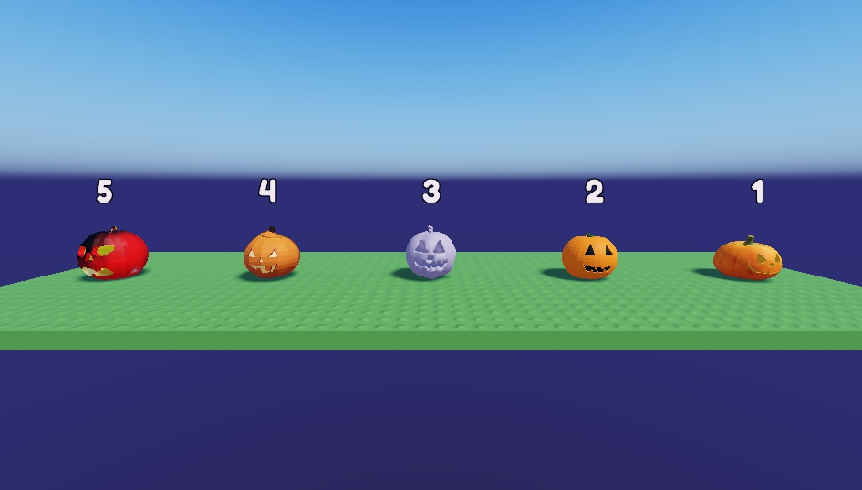
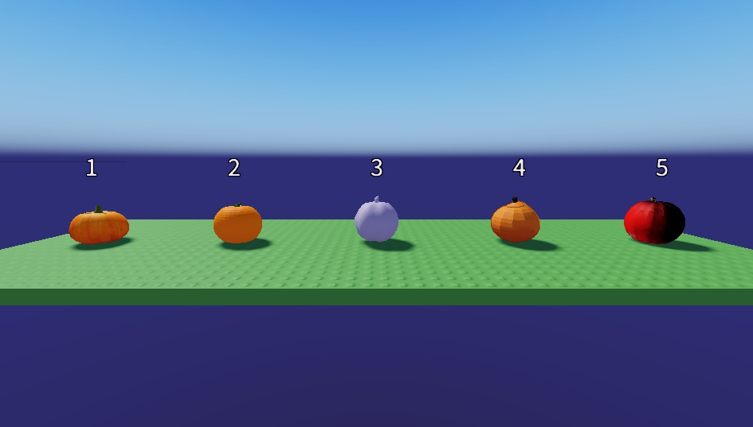

Choix des citrouilles
Cinq vraies citrouilles gratuites de la boutique Roblox, posées dans Studio à la même taille. Celle que tu choisis remplacera les boules orange au pied de la palissade du Potager (avec des yeux qui brillent la nuit).



- Citrouille large et côtelée, visage discret
- Citrouille ronde, visage classique bien noir
- Visage sculpté, mais grise (on peut la recolorer en orange)
- Citrouille côtelée, visage qui brille
- Rouge et noire, abîmée